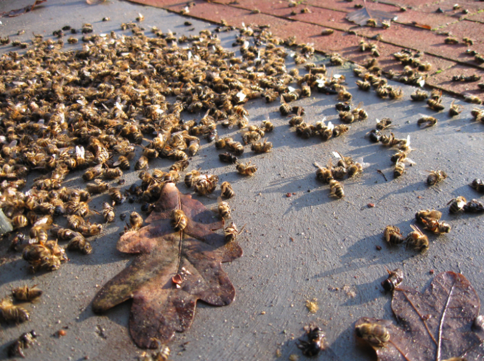

Honeybees are dying at a record pace.
Would you want to live in a world without honey? Without urgent intervention this nightmare might become a reality. Honeybees are dying out and we need to act fast if we want to save them.
The drastic decline of the honey bee population is a crisis that is being felt worldwide. Our greatest pollinators are in trouble. Since the introduction of neonicotinoid-containing pesticides, honey bee loss has reached a record high. This is concerning because, without the pollination of the honey bee, humankind will cease to exist.
The honey bee is a vital insect to civilization for its amazing pollination capabilities and honey production. In ancient times, wild honeybees pollinated the land and nourished our ancestors with sweet tasting honey. In modern times it provides an even more vital service, underpinning our agricultural industries and providing us with the variety of food that we currently enjoy.
Here at BeeKeeper we are trying to prevent this collapse from happening. We are setting up beehives across the country, and analysing honey from these beehives in an effort to better understand colony collapse disorder and how we can prevent it. Furthermore, we are trying our hardest to educate the public on this topic, and to have legislation passed to make irresponsible use of pesticides illegal.

Sign up for our newsletter!
What we do
BeeKeeper is an organisation that advocates for public awareness of Colony Collapse Disorder, and the preservation of the wild honeybee. Through the combined efforts of commercial apiarists, farmers, environmental scientists, and home beekeepers, we hope to mitigate the harmful effects that pesticides are having on wild honeybee colonies, and ultimately preserve one of the cornerstones of our natural ecosystem.
What you can do to help
If you are interested in contributing to this project, please visit our How to help page and pledge to make a monthly donation. Alternatively, sign a petition or subscribe to our monthly newsletter.